FreeCAD 原生截图 · 65×45m · 墙高5.8m P · 导视牌4.0×2.1m · 人视角眼高1.6m · 同源参数平面
2D/3D地图尺寸同步；02认证后人视角未同时看到两块导视，封盘条件3未通过，因此尚未标记冻结。
主视角保持约59°水平透视；小图与开顶检查不替代人视角。点击图片打开原图。
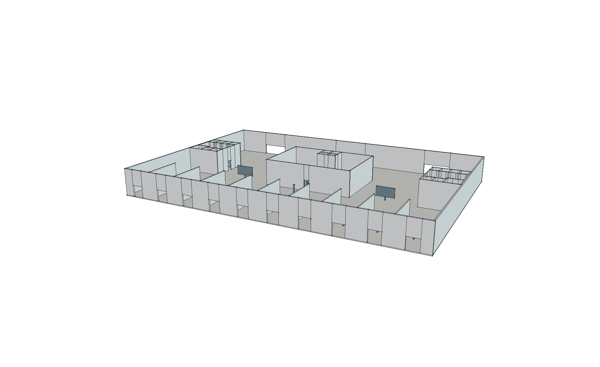
正面斜视：十个真实入口开口；开顶显示内部。
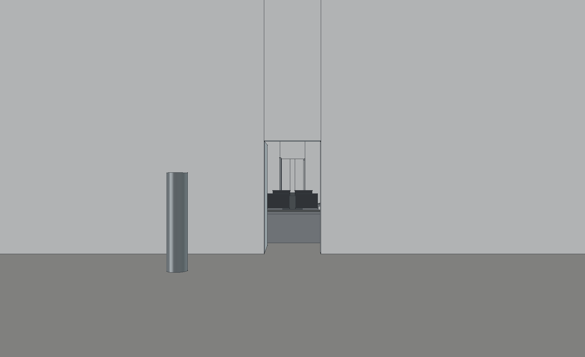
认证后中央直视：眼高1.6m。地图位于正前方画幅之外，工作人员区挡住后方视线。
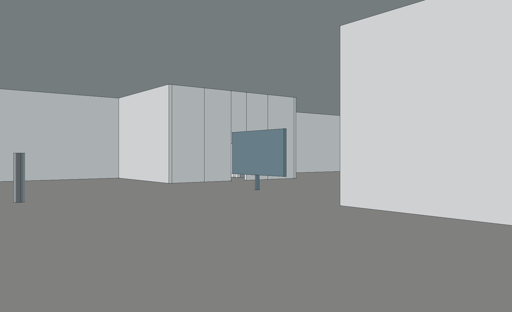
同一眼位向左转头：左地图面板可见。
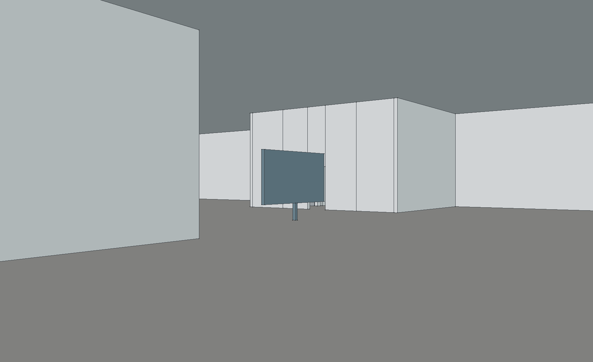
同一眼位向右转头：右地图面板可见。
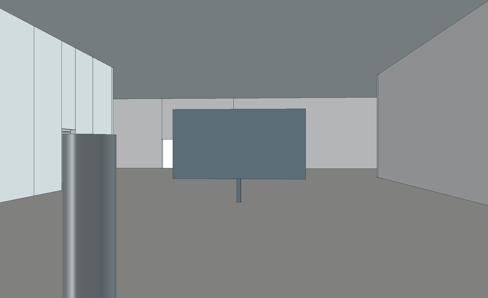
C入口后向前：左地图直接进入视野，左侧后出口可见。
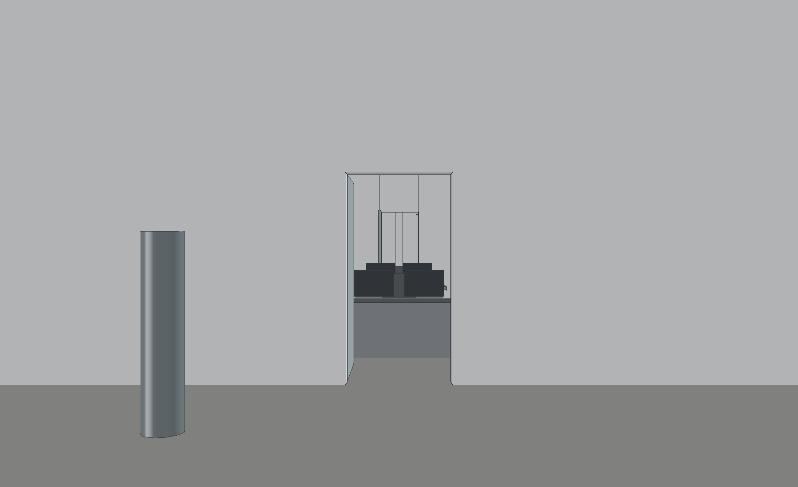
前厅中轴望后侧：工作人员区遮挡后出口。保留真实遮挡。
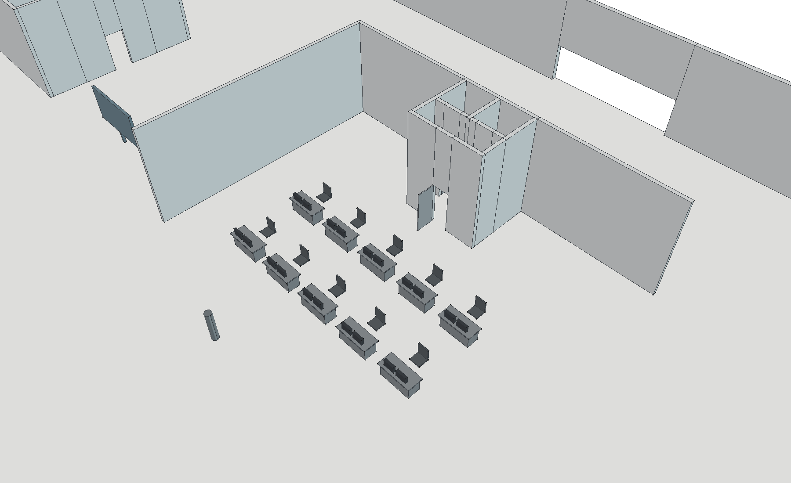
工位检查：十个双屏工位、后侧卫生间；仅本视角隐藏工作人员区前/右墙与对应门楣。
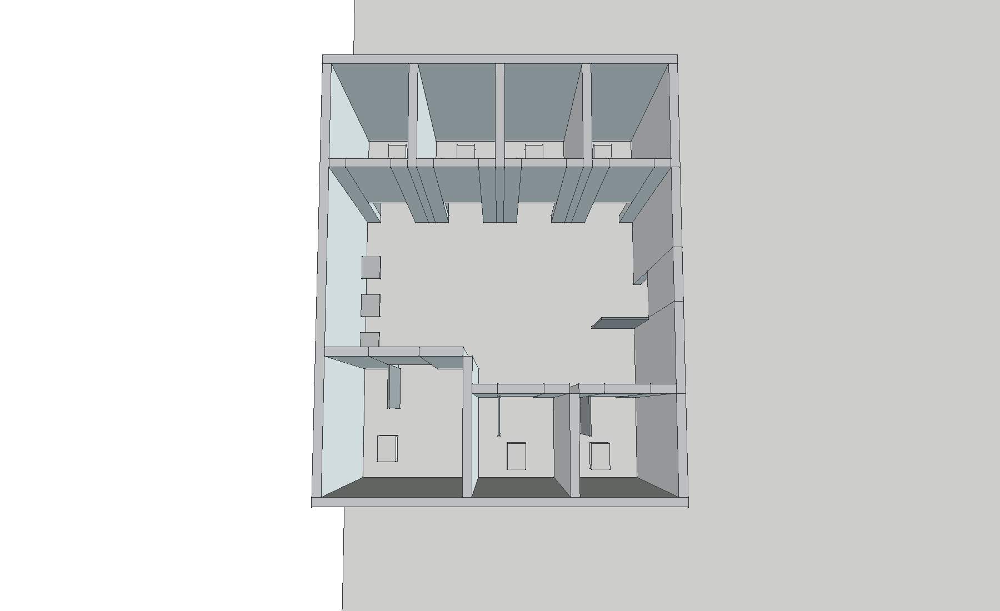
左公共厕所开顶：两排七个全高独立隔间、三洗手位；右侧镜像。
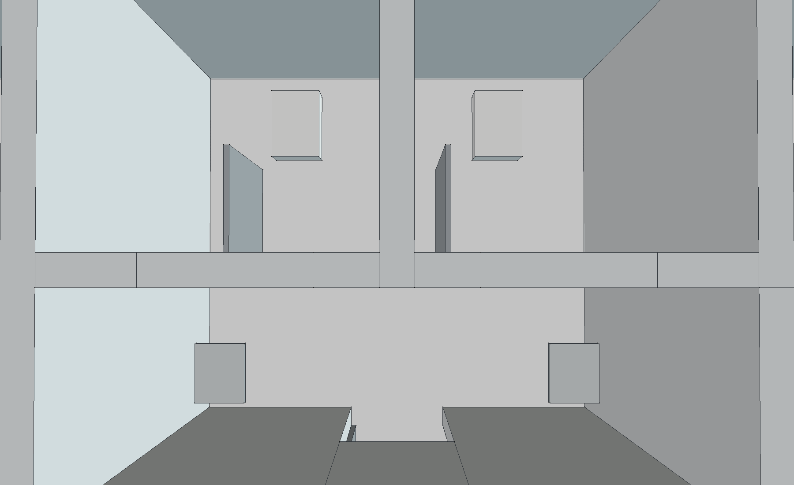
内部卫生间开顶：两隔间、两洗手位；保留全高墙。
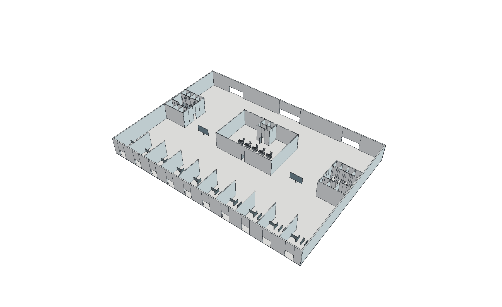
整体鸟瞰：65×45m，同源布局，墙高5.8m。
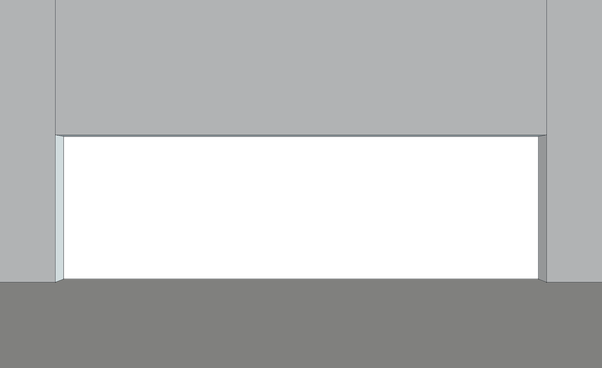
绕行至后厅中部：中央出口可见。
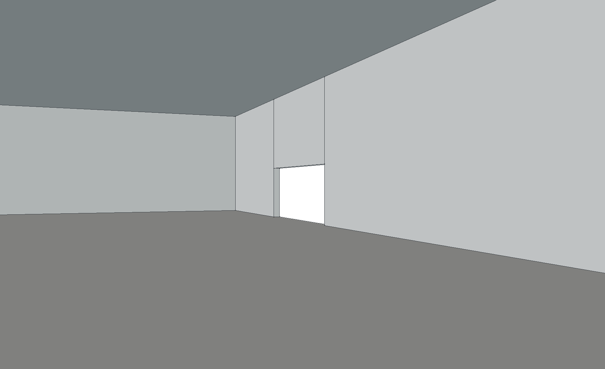
同一后厅眼位向左：左出口可见。
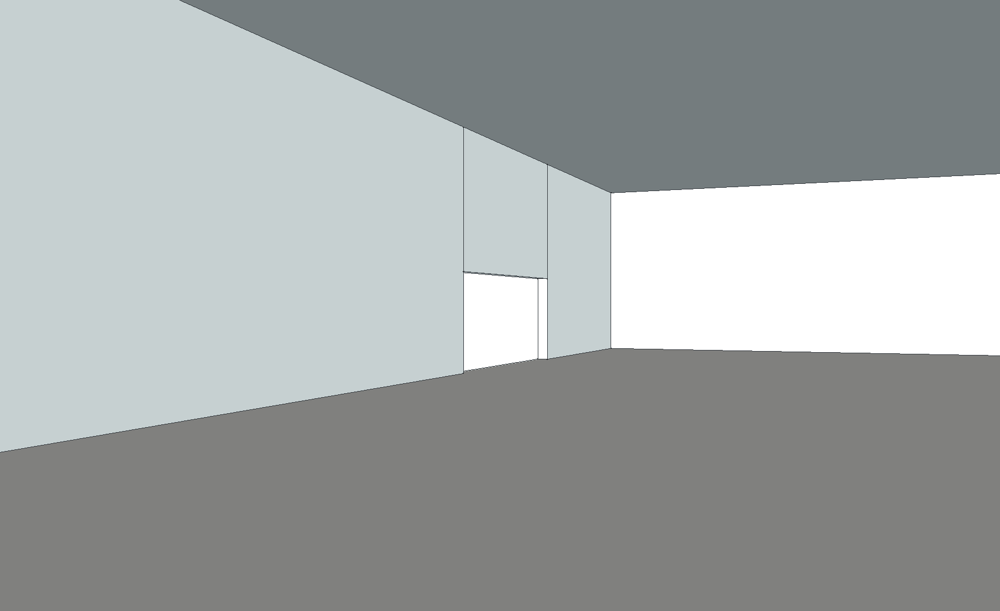
同一后厅眼位向右：右出口可见。
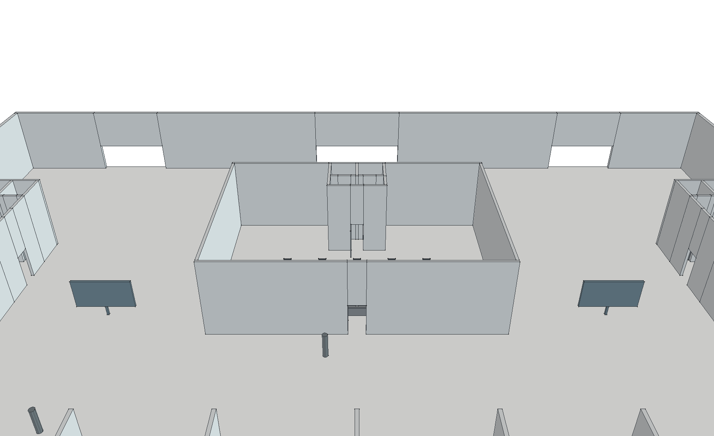
高位检查：三个后出口完整留空。此图不能证明人视角可见性。